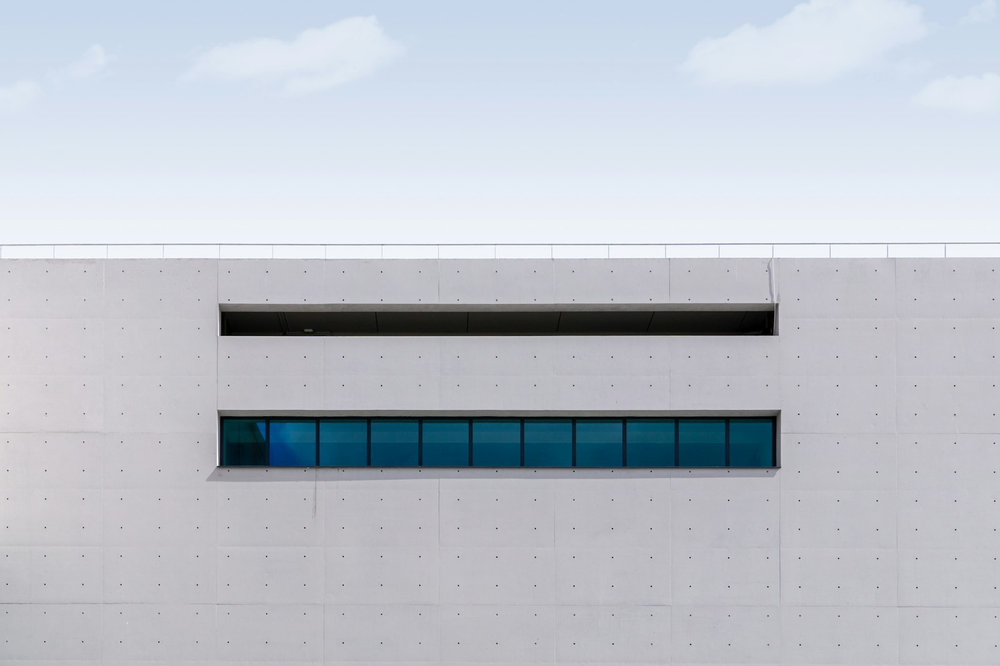

Renovations
Rework the plan, welcome the daylight, and keep the character. A fresh way to live in a familiar place.
Explore renovationsModest homes. Thoughtful shared spaces. Architecture that makes more of what is already there.
Explore our work
Three fictional design studies, exploring the places we care about.
We begin by listening: to the people, to the place, and to what a building already offers. Often, the best answer is a careful adjustment rather than a bigger footprint.
Rework the plan, welcome the daylight, and keep the character. A fresh way to live in a familiar place.
Explore renovationsCareful proportions and hardworking rooms. New homes shaped around daily rituals and a lighter footprint.
Explore new homesWelcoming rooms for reading, making, meeting, and sharing. Small public places with an open invitation.
Explore shared spacesA room to rethink. A small plot. An idea for your neighborhood.